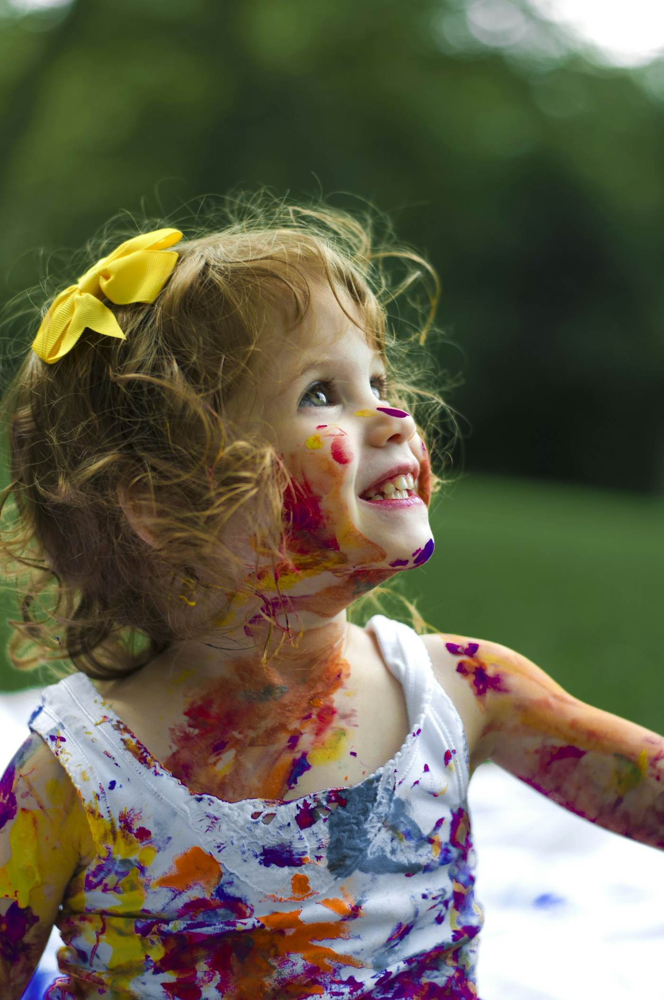
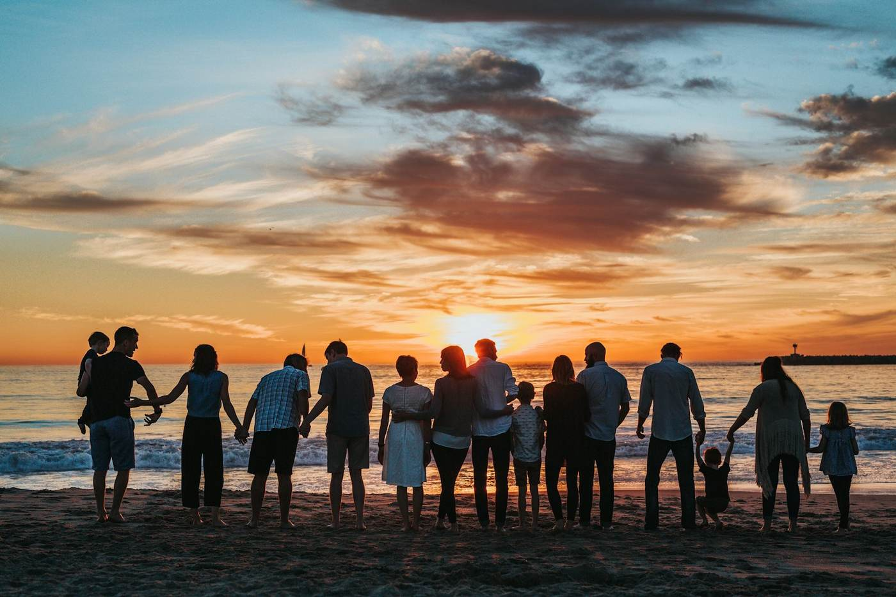

Família & crianças · Setúbal
Eles crescem depressa. Guarda este momento.
Sessões descontraídas de família, bebés e crianças, em casa, no parque ou na praia.
★★★★★Famílias de exemplo · avaliação ilustrativa


Sem posesbrincadeira e gargalhadas
Sessões
Para cada fase


Sobre mim
Fotografias com brincadeira.
As crianças não posam, brincam. Por isso as minhas sessões são passeios, piqueniques e muitas cócegas.
Trabalho com luz natural e no ritmo de cada família, sem pressa.
Recém-nascidosFamíliaGrávidasAniversários
Porquê nós
Sessões sem lágrimas
Paciência infinita
Respeitamos o ritmo das crianças.
Luz natural
Fotografias suaves e verdadeiras.
Em tua casa
Sem stress nem deslocações.
Entrega em 2 semanas
Galeria online para partilhar.
Escolhe a sessão
Família, bebé ou grávida.
Marcamos o local
Casa, parque ou praia.
Brincamos
E eu fotografo.

Famílias
O que dizem as famílias
“O meu filho riu-se a sessão inteira. As fotos estão lindas.”
“As fotografias do recém-nascido são o nosso tesouro.”
“Juntou três gerações numa tarde de praia perfeita.”
Testemunhos de exemplo. Substitui pelos testemunhos reais dos teus clientes.
Mini sessões de Natal.
Sessões de 20 minutos em dezembro, com 10 fotografias editadas.

Respondo em 24 horas
Marca a vossa sessão.
Diz-me a idade das crianças e o tipo de sessão que procuram.
Morada
Avenida Luísa Todi, 300, Setúbal
Telefone
Horário
- AtendimentoSegunda a sexta, 10h – 19h
- SessõesCom marcação, incluindo fins de semana